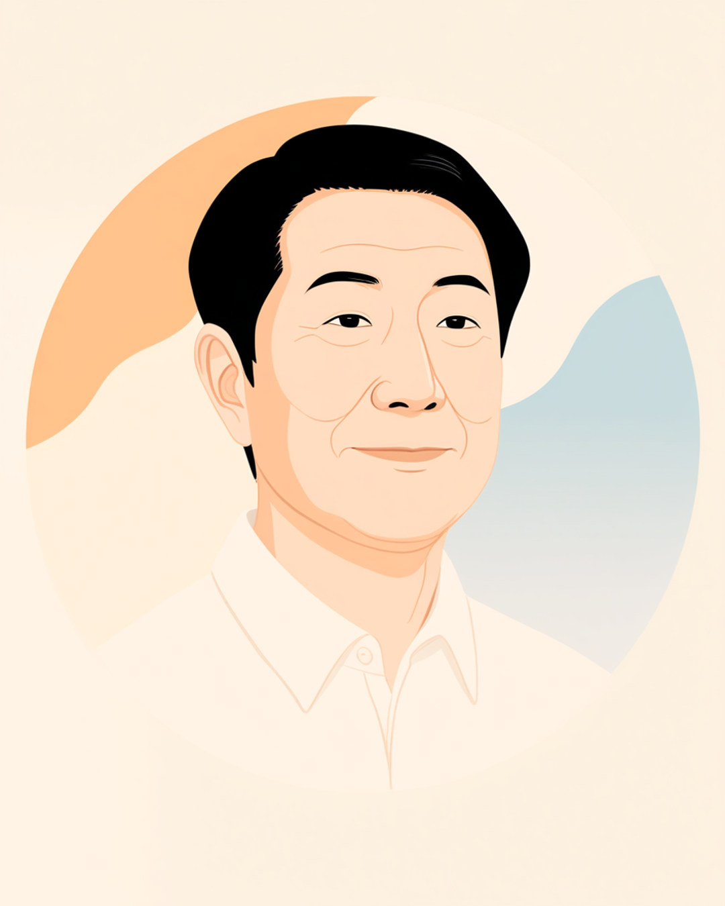

満員電車で誰かの肩がドンとぶつかった瞬間、気づけば片手が自分の胸のあたりに動いていた。そんな経験がある方は、少なくないのではないでしょうか。心臓ペースメーカーは「見た目では分からない障害」と言われますが、実際には胸元の膨らみや傷跡、とっさの防御動作といった形で、ふと誰かの目に触れる瞬間があります。この記事では、その「見えないはずなのに、見えてしまう」境目で揺れる気持ちと、職場との付き合い方を当事者の声をもとに整理しました（2026年9月時点の情報です）。
PR


満員電車でぶつかられるたび、無意識に胸をかばっていた

心臓ペースメーカーは、心臓の拍動が乱れたり遅くなったりしたときに、電気の刺激で正常なリズムに整える小さな機械です。胸の皮膚のすぐ下に植え込まれていて、多くの場合、上着の下からは見えません。まめざる
就労支援の現場で、心臓機能障害のある方と話していると、通勤の話題で出てくる言葉があります。「電車で人にぶつかられるのが、実は一番怖い」というものです。ペースメーカーそのものは頑丈に作られており、多少の衝撃で壊れるものではないとされています。それでも、体はそう単純に納得してくれないようで、肩がぶつかった瞬間、考えるより先に手が胸のあたりに動いてしまう、という声を何度も聞いてきました。
本人にとっては一瞬の反射的な動きでも、傍から見ると「なぜか胸をさすっている人」に映ります。理由を知らない人からすれば、特に気に留めるほどのことではないかもしれません。ただ本人の中では、その一瞬に「大丈夫だっただろうか」という小さな緊張が毎回積み重なっているようです。
!
ペースメーカーの機種や植え込み時期、体調の感じ方には個人差があります。この記事は複数の方から伺った内容を組み合わせて構成しており、そのまま当てはまるとは限りません。体調に不安がある場合は自己判断せず主治医に相談することをお勧めします。
「植え込んで3年くらい経ちますが、いまだに満員電車は苦手です。正直言うと、最初の1年は電車に乗るたびにずっと緊張してました。ある朝、駅のホームで後ろから軽く押されただけなのに、思わず『すみません、心臓に機械入ってるので』って口走ってしまって。相手はきょとんとしてましたけど、自分でもびっくりしました。今はさすがに慣れましたけど、たまに強くぶつかられると、やっぱり一瞬身構えちゃいますね。」
30代・女性（心臓機能障害・ペースメーカー装着・事務職）
シャツの上からでも分かる、その四角い膨らみに気づかれた日
植え込み手術の傷は、皮下脂肪の厚みによって目立ち方が変わるとされています。痩せ型の方だと、機械本体の四角い輪郭がシャツの上からうっすら分かることがあるようです。普段は誰も気にしないような場所でも、健康診断で着替えるとき、夏に薄手のシャツを着るとき、温泉や社員旅行の大浴場など、ふとした瞬間に「その膨らみ、何?」と聞かれる場面が訪れることがあります。
「見えない障害」という言葉のずれ
心臓機能障害は内部障害と呼ばれる区分に含まれ、「外見からは分かりにくい障害」と説明されることが多くあります。それ自体は間違いではありませんが、当事者の実感としては「基本的には見えないけれど、油断した瞬間にふと見えてしまう」という、もう少し不安定な状態に近いようです。完全に隠せているわけでもなく、常に見えているわけでもない、その中間の落ち着かなさが、地味に神経を使う部分なのかもしれません。
「夏場、更衣室で着替えてたら、後輩の女の子に『先輩、そこ何か入ってます?』って聞かれて、一瞬固まりました。別に隠してたわけじゃないんですけど、いざ聞かれると何て説明したらいいか分からなくて、めちゃくちゃ焦って『あー、まあ、いろいろあって』みたいな適当なごまかし方をしてしまって。あとで冷静になって、ちゃんと説明すればよかったなと反省しました。次に聞かれたときは、もう少しちゃんと答えようと決めています。」
40代・女性（心臓機能障害・ペースメーカー装着・営業事務職）
i
植え込み位置や機種によって、膨らみの目立ち方はかなり違うとされています。「絶対に気づかれる」というものでもなく、「絶対に気づかれない」というものでもないため、聞かれたときにどう答えるか、自分なりの一言をあらかじめ決めておくと気持ちが楽になったという声もあります。
IHや溶接だけじゃない、電磁波との実際の距離感
ペースメーカーを装着していると、電磁波を発生させる機器との付き合い方が話題になります。ただ、注意が必要な機器と、通常の距離であれば問題になりにくいとされる機器は、実はかなりはっきり分かれているようです。漠然と「電化製品全般が怖い」と身構えるよりも、何にどれくらい気を配ればいいのかを知っておく方が、日々の緊張は減らせるかもしれません。
「なんとなく怖い」を、場面ごとに分けて考えてみる
溶接機や高圧の配電盤など、業務用の強い電磁波を発生させる機器は、実際に注意が必要とされています。こうした作業がある職種の場合は、事前に主治医や産業医と相談し、配置や作業内容を調整してもらうことが大切です。一方でIH調理器やスマートフォンなど、日常的に使う機器の多くは、一定の距離を保てば過度に心配しなくてよいとされています。満員電車での接触そのものが直接の危険につながるとは限らないという情報もありますが、体感としての不安は別問題として、無理せず向き合っていく方法を探ることも一つの選択です。
相談の一コマ

相談者
転職先が工場で、溶接の作業がある部署なんです。ペースメーカーのことを言ったら、配属で不利になるんじゃないかと思って、面接では黙っていました。
まめざる
溶接作業は、実際に注意が必要とされる数少ない場面の一つです。ここだけは、黙っておくよりも先に伝えておいた方が、ご自身の安全のためにも大切かもしれません。
相談者
配属が変わってしまうのが怖くて、つい後回しにしていました…。
まめざる
気持ちはよく分かります。ただ、まずは産業医や人事に事情だけでも共有してみませんか。配属先を一緒に考えてもらえる可能性もありますし、伝えないまま働き続ける方が、実は負担が大きいこともあります。
「電池が入ってる」とどう伝えるか、使える配慮と相談先
ペースメーカーのことをどこまで、どう伝えるか。これは正解がひとつに決まっている話ではありません。ただ、業務に直接関わる場面だけは、あらかじめ共有しておいた方が、いざというときに双方が困らずに済むようです。
- 「溶接作業や高圧設備がある区域には近づけません」
- 「胸に強い衝撃が加わるような作業は避けたいです」
- 「電池で動く機械が入っているので、健康診断のときはあらかじめ伝えます」
- 「普段の業務では特に問題ないので、必要以上に気を遣わなくて大丈夫です」
「電池が入っている機械が胸にある」というくらいの伝え方から始めても十分です。詳しい仕組みまで説明する必要はなく、業務に関わる範囲だけ共有できれば、それで職場は動きやすくなることが多いようです。まめざる
身体障害者手帳という選択肢
心臓機能障害として、身体障害者手帳の内部障害の区分に含まれる場合があります。等級は心臓の機能低下の程度や日常生活への影響によって異なるため、詳しくは主治医や自治体の障害福祉窓口に確認するのが確実です（2026年9月時点の情報です）。手帳を取得すると、障害者雇用枠での就職や、企業側の合理的配慮を前提にした働き方を選びやすくなる場合があります。
相談できる窓口
- 主治医・循環器内科（体調の記録や、業務内容についての意見書の相談）
- 職場に選任されている産業医（50人以上の事業場に選任義務あり）
- 自治体の障害福祉窓口、身体障害者手帳の相談窓口
- 就労移行支援事業所（配慮の伝え方を含めた就労準備や職場との調整）
ペースメーカーの機種や植え込み位置、電磁波への感じ方には個人差があります。この記事の内容がそのまま当てはまるとは限らないため、実際の判断は主治医・産業医・自治体の窓口とよく相談しながら進めることをお勧めします（2026年9月時点の情報です）。
見えない障害は、いつも見えないわけではありません。ふと見えてしまう瞬間があっても、それは隠しきれなかった失敗ではなく、誰にでも起こりうる自然なことです。
よくある質問
Q. ペースメーカーが入っていることは、職場に必ず伝えないといけませんか？
法律上、病名や治療内容をすべて開示する義務はないとされています。ただし、力仕事や特定の機器を扱う業務がある場合は、安全のために業務に関わる範囲だけでも伝えておいた方が、結果的に配慮を受けやすくなるという声もあります。伝える範囲は、ご自身の仕事内容や職場の状況に合わせて考えることをお勧めします。
Q. スマートフォンやワイヤレスイヤホンを胸ポケットに入れても大丈夫ですか？
一般的なスマートフォンやワイヤレスイヤホンは、通常の使い方であれば大きな問題は起きにくいとされています。ただし機器メーカーや医療機関によって案内が異なる場合があるため、気になる場合は主治医や医療機器メーカーの相談窓口に確認すると安心です。
Q. 職場で本当に注意した方がいい電磁波の発生源はありますか？
溶接機や高圧電流を扱う配電盤、業務用の強力な電磁波を発生させる機器などは注意が必要とされています。一方でIH調理器は一定の距離を保てば問題になりにくいとされているなど、機器によって注意の度合いは異なります。業務で使う機器がある場合は、事前に産業医や主治医に相談しておくと安心です。
Q. 満員電車や人混みそのものを避けた方がいいですか？
人にぶつかられること自体が直接ペースメーカーの故障につながるとは限らないとされていますが、体感として不安を感じる方は多いようです。無理に我慢するのではなく、時差出勤や着席できる車両の利用など、負担を減らす工夫を検討してみるのも一つの方法です。
Q. ペースメーカーを装着していると身体障害者手帳は取得できますか？
心臓機能障害として、身体障害者手帳の内部障害の区分に含まれる場合があります。等級は心臓の機能低下の程度や日常生活への影響によって異なるため、詳しくは主治医や自治体の障害福祉窓口にご確認ください（2026年9月時点の情報です）。
見えないことに気を張りすぎず、必要な範囲だけ伝えていく
PR


一人で抱え込む前に、今の気持ちを話してみませんか
「まだ迷っている」段階でも大丈夫です。mimemimeの無料相談は、今の状況の整理から一緒に始められます。
無料で話してみる
この記事に、聞いてみたいことはありますか？
「自分の場合はどうなんだろう」と思ったことを、気軽に書いてみてください。いただいた質問は個別にお返事したうえで、匿名で記事にすることがあります。
おのざる
mimemime代表。就労支援の現場経験をもとに、障がいのある方の働く不安に寄り添う記事を執筆。